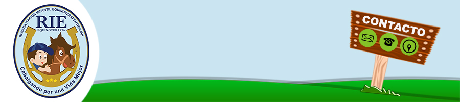

¿Qué hacemos?
La equinoterapia está indicada para personas que presentan:
- Parálisis Cerebral infantil
- Síndromes (West)
- Síndrome de Down
- Autismo
- TDAH (Transtorno de déficit de atención e hiperactividad)
- Transtorno General del Desarrolo
- Retraso Psicomotor
- Deficiencia Mental
- Escoliosis (Menor 40°)
- Cifosis, Lordosis
- Trastornos emocionales y conductuales
- Problemas de adicción
- Epilepsia controlada
La equinoterapia está contraindicada para personas que presentan:
- Luxación y displasi de cadera
- Escoliosis mayor a 40°
- Inestabilidad atlanto-axial
- Problemas severos de columna
- Problemas cardiacos
- Epilepsia no controlada
- Enfermedades crónicas degenerativas con procesos inflamatorios